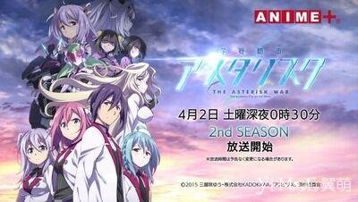
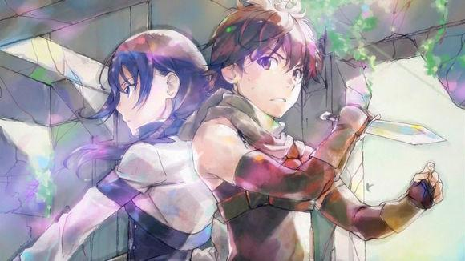
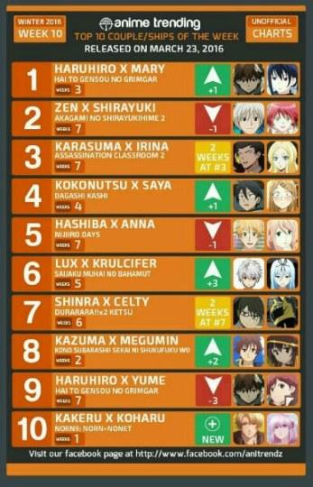
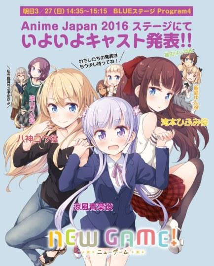
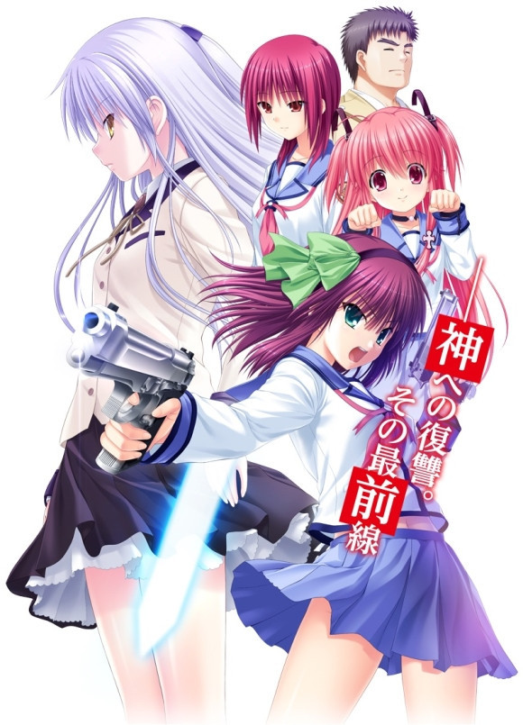

四月新番看什么？日本网友推荐—— 2016-3-30 14:30:21
- 4月很快就要到来了，为数可观的4月新番也将接踵而至。然而在这些让人眼花缭乱的新番中，有哪些番值得看？每个番又会有怎样的看点？日本网友们对此也发表了自己的看法，并列出了自己想追的番，你还在犹豫不知道追哪些番吗？来看看日本网友们的讨论和推荐当做参考吧！
[展开全文]
- 
四月新番看什么？日本网友为你推荐！
4月很快就要到来了，为数可观的4月新番也将接踵而至。然而在这些让人眼花缭乱的新番中，有哪些番值得看？每个番又会有怎样的看点？日本网友们对此也发表了自己的看法，并列出了自己想追的番，你还在犹豫不知道追哪些番吗？来看看日本网友们的讨论和推荐当做参考吧！
ななしさん 16/03/28(日)20:48:13 No.395867317
我要看《Concrete Revolutio~超人幻想~》。
ななしさん 16/03/28(日)18:53:43 No.395840117
有《蜘蛛侠》新作哎，稍早之前做的那部的续作吗？
ななしさん 16/03/28(日)18:56:47 No.395840798
要看《超时空要塞Δ》《潮与虎》《黑色残骸》《Concrete Revolutio~超人幻想~》《甲铁城的卡巴内瑞》《机动战士高达UC RE0096》，还在犹豫看不看《JOJO的奇妙冒险 不灭钻石》。
ななしさん 16/03/28(日)19:26:02 No.395846822
《甲铁城的卡巴内瑞》看了先行上映的3话，简直好看到无法抱怨。
ななしさん 16/03/26(日)03:34:31 No.394293939
我超期待《爆音少女》，《超时空要塞Δ》也期待。
ななしさん 16/03/28(日)18:45:17 No.395838431
《学战都市Asterisk》拿出真本事的时候终于到了
[返回]
票选1月新番CP榜—— 2016-3-30 14:30:21
- 很多动漫迷在追一部作品的时候，除了被其中的剧情所打动之外，角色们之间的CP问题往往也是让人关注的焦点。对此，近日欧美网站anime trending就推出了最新一期的1月新番CP榜。
[展开全文]
- 
四月新番看什么？日本网友为你推荐！
很多动漫迷在追一部作品的时候，除了被其中的剧情所打动之外，角色们之间的CP问题往往也是让人关注的焦点。对此，近日欧美网站anime trending就推出了最新一期的1月新番CP榜。
其中，排名第一位的是《灰与幻想的格林姆迦尔》中的哈尔希洛×梅丽。虽然后者在剧情中期才出场，但很快就俘获了主人公的“芳心”。
而目前的剧情也有着几分帮助梅丽报仇的意思。与之相对的，哈尔希洛×梦儿的哈梦党只排名第九位。
至于第二的CP来自于《赤发白雪姬》。白雪跟千的虐狗组合此前长期把持CP榜的前排位置，应该说两人之间的关系处处都有着“恋爱的酸臭味”，并且也是正儿八经的官配了。
排名第三的是《章鱼老师》中的乌丸老师×碧池老师。这一对也是本作品中拥有很高人气的CP了。而排名第四位的CP来自于《粗点心战争》，是主人公鹿田九×女二号远藤沙耶。能够有“女二上位”的机会，本身就说明了角色的人气。另外排名第五的是《虹色Days》的羽柴夏树×小早川杏奈。
【欧美宅1月新番CP榜单】

第一位 哈尔希洛×梅丽（《灰与幻想的格林姆迦尔》）
第二位 千×白雪（《赤发白雪姬》）
第三位 乌丸老师×碧池老师（《章鱼老师》）
第四位 鹿田九×远藤沙耶（《粗点心战争》）
第五位 羽柴夏树×小早川杏奈（《虹色Days》）
第六位 路克斯·阿卡迪亚×库露露席法·恩芙尔克（《最弱无败的神装机龙》）
第七位 岸谷新罗×塞尔提·史特路尔森（《无头骑士异闻录》）
第八位 和真×惠惠（《为美好的世界献上祝福！》）
第九位 哈尔希洛×梦儿（《灰与幻想的格林姆迦尔》）
第十位 结贺驱×小春（《命运九重奏》）
[返回]
新人领衔！《NEW GAME！》声优名单公布—— 2016-3-27 17:30
- 此前宣布将在今年7月开播的新番动画《NEW GAME！》凭借最近流行的“业界” “游戏制作”的主题引发了不少动漫迷关注。而近日，作品的声优名单正式公布。
[展开全文]
新人领衔！《NEW GAME！》声优名单公布
此前宣布将在今年7月开播的新番动画《NEW GAME！》凭借最近流行的“业界” “游戏制作”的主题引发了不少动漫迷关注。而近日，作品的声优名单正式公布。

其中，女主角凉风青叶将由高田忧希配音，此前除了《偶像活动》的黒泽凛之外，她几乎没有什么代表性角色，但或许这样才更加符合主人公“新人职员”的特点。
其他方面，泷本日富美将由山口爱配音、远山伦将由茅野爱衣配音、八神光将由日笠阳子配音、篠田初将由户田惠配音、饭岛结音将由竹尾歩美配音。应该说除了搞笑艺人和毛衣之外，其他的声优名字都显得比较陌生。那么届时她们的表现如何呢？请继续关注！
《NEW GAME！》讲述了刚刚踏入职场的新人·凉风青叶充满期待地进入了自己梦寐以求的游戏公司。而在这儿她遇到了很多憧憬的前辈、以及并肩作战的同事。那么除了画图毫无所长的青叶，能否制作出一部完美的游戏呢？
[返回]
日漫《Angel Beats！1st beat》改成PC游戏—— 2016-3-30 14:30:21
- PC游戏《Angel Beats！ 1st beat》（暂译：天使的心跳：第一拍）原计划今年年内发行，近日官方正式宣布该游戏将于明年5月29日发售，明年1月30日开启预定。
[展开全文]

日漫《Angel Beats！1st beat》改成PC游戏
PC游戏《Angel Beats！ 1st beat》（暂译：天使的心跳：第一拍）原计划今年年内发行，近日官方正式宣布该游戏将于明年5月29日发售，明年1月30日开启预定。
《Angel Beats! 1st beat》定价7500日元（不含税，约合RMB 389元），游戏预约特典收录未曾公开过的曲目《Million Star》专辑CD。

[返回]